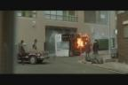
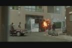
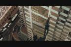

 
This scene in GitS (Ghost in the Shell) is when Motoko's truck gets turned over after its wheels were shot at by high-velociy Uzi bullets. In Matrix, we dont really witness the truck tipping over. Instead, we see the aftermath of the wreckage, as Cypher is reporting it to his crewmate.
Conspiracy Rating: 7 (hey they are both armored trucks, plus
the first the first one eventually catches on fire later, see below)
Yep, that baby catches on fire real good. Here we see Motoko doing
a jump away from the explosion coming from the armoured car, somewhat similar to Trinity's escape in
the following next pics:

Conspiracy Rating: 4 (not much of a similarity, most action films with explosions have scenes like this)
Both scenes have our heroes in the elevator conversing. Not too much
to speak of. There is also that one infamous Matrix elevator scene later
on.
Conspiracy Rating: 3 (a relatively mundane scene)
On to more Scene Comparisons
|

{kind=link}
{kind=link}
{kind=link}
{kind=link}
{kind=link}
{kind=link}
{kind=link}
{kind=link}
{kind=link}
{kind=link}